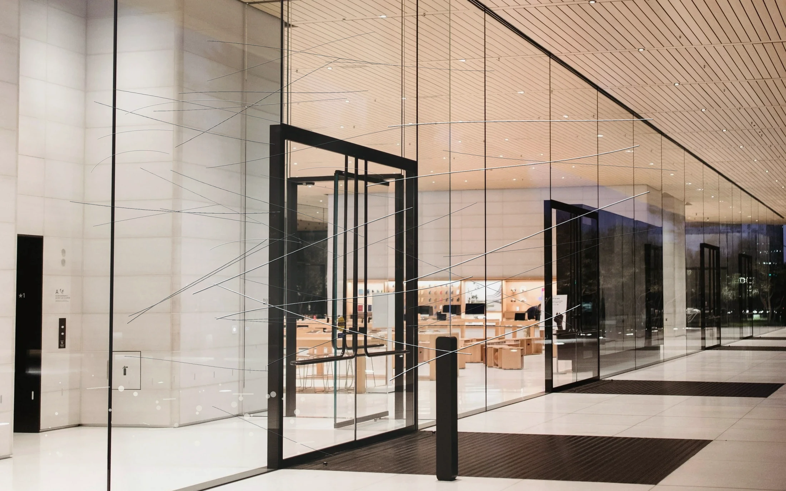
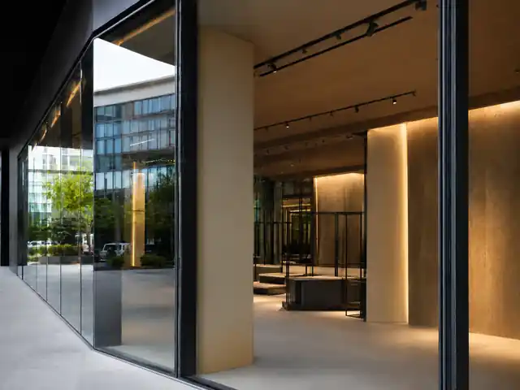
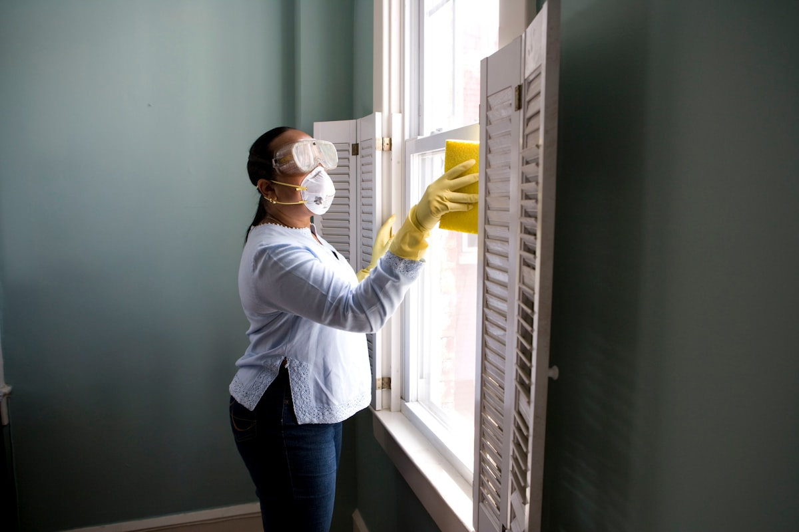

Полировка и восстановление стекла на объекте
Не меняйте стекло из-за царапин
Во многих случаях царапины, потёртости, краску и следы ремонта можно убрать прямо на объекте — без демонтажа, заказа нового стекла и ожидания несколько недель.
01 · ДО / ПОСЛЕ
Царапины убираем прямо на установленном стекле


ДОцарапины · потёртости · краска
ПОСЛЕчистая поверхность · то же стекло
Проведите пальцем по границе
Повреждение крупным планом
Не прячем царапины удачным ракурсом
Осматриваем стекло при боковом свете и заранее говорим, что уйдёт полностью, что станет менее заметно и когда замена действительно безопаснее.
→
Пример расчёта для витрины: 3 элемента, около 8 м², свободный доступ. Точная цена и результат зависят от глубины повреждения, типа стекла и условий на объекте.
Что отправить3–5 фото и примерные размеры
Что скажемможно ли убрать повреждение и за сколько
Когда ответимв день обращения
Проверить стекло
02 · ПОЧЕМУ ЗАМЕНА ДОРОЖЕ
Замена — это не только новое стекло
После заказа начинаются повторные замеры, производство, доставка, подъём, демонтаж, монтаж и восстановление отделки. Объект снова зависит от нескольких подрядчиков и чужих сроков.
Расходы при полной замене
0 ₽
Восстановление в этом примере96 000 ₽около 2 дней
Сначала ждёте новое стекло
Повторный замер, согласование характеристик и производство под заказ.
Потом оплачиваете доставку и подъём
Транспорт, разгрузка, техника и повторный доступ на объект.
Готовую конструкцию приходится разбирать
Демонтаж повреждённого стекла, установка нового и герметизация.
После монтажа остаётся вернуть отделку
Дополнительные работы, повторная уборка и новая приёмка.
Перед тем как запускать эту цепочку, проверьте восстановлениеДля предварительного ответа достаточно нескольких фотографий.
Проверить стекло по фото03 · СРАВНЕНИЕ
Что меняется, если стекло не заказывать заново
Сравните не только цену, но и количество этапов, срок и вмешательство в уже готовый объект.
Восстановление на объекте
Обрабатываем повреждённый участок без демонтажа стекла
1Фото и диагностикав день обращения
2Тестовый участокпри необходимости
3Работы на объекте1–3 дня
4Приёмка и документыв день окончания
5Производство и доставкане требуются
Экономия в примере — 216 000 ₽Без ожидания производства, доставки и повторного монтажа

Иллюстрация процесса · работаем с установленным стекломПри спорном повреждении сначала показываем результат на небольшом участке
04 · КАК СНИМАЕМ РИСК01 02 03 04
Не просим верить нам на слово
Смотрим фотографии
Сразу отсеиваем случаи, где восстановление не даст нормального результата.
Делаем тестовый участок
При необходимости обрабатываем небольшую зону, чтобы вы увидели результат до заказа всего объёма.
Фиксируем цену и срок
До начала работ согласовываем объём, стоимость, график и документы.
Сдаём при согласованном свете
Проверяем поверхность при тех же условиях, которые заранее согласовали с заказчиком.
05 · ОТВЕТ ПО ВАШЕМУ ОБЪЕКТУ
По фото сразу скажем, есть ли смысл выезжать
ПРЕДВАРИТЕЛЬНАЯ ОЦЕНКАпо фотографиям и размерам
- Что повреждено
- царапины / потёртости / окалина / краска
- Можно ли восстановить
- да / нет / нужен тест
- Что делать дальше
- расчёт по фото, тестовый участок или выезд
- Стоимость
- ориентир в рублях до выезда
- Срок работ
- от нескольких часов до нескольких дней
06 · РАСЧЁТ В РУБЛЯХ
Посчитайте, сколько можно сэкономить без замены
Укажите примерную площадь и количество стёкол. Калькулятор сравнит порядок бюджета и срок по двум вариантам.
После цифр — проверка по фотоРасчёт не видит глубину царапин и тип стекла. Фотографии нужны, чтобы подтвердить, что восстановление вообще возможно.
07 · ДОПОЛНИТЕЛЬНЫЕ РАБОТЫ
На строительном объекте можем закрыть не только стекло
Основная специализация — восстановление стекла. По согласованию берём на себя локальные замечания, отделку и финальную уборку, чтобы не собирать нескольких подрядчиков перед сдачей.
Стекло
Царапины, окалина, краска, потёртости и загрязнения.
Замечания
Локальные недоделки перед повторной приёмкой.
Отделка
Финишные и строительные доработки.
Клининг
Финальная подготовка помещений и поверхностей.
Объект готов к приёмке
Один график, один ответственный и меньше повторных выездов.
08 · КОГДА НУЖНА ЗАМЕНА
Иногда стекло действительно лучше заменить
Мы не берёмся за работу, если восстановление может повлиять на безопасность или оставить недопустимые искажения.
- трещины и разбитое стекло;
- сквозные повреждения;
- дефекты, влияющие на прочность и безопасность;
- слишком глубокие повреждения на большой площади.
09 · ПЕРЕД ЗАКАЗОМ
Ответы на вопросы, которые обычно задают до выезда
Не появятся ли оптические искажения?
Это зависит от глубины царапины, толщины стекла и площади обработки. Поэтому спорные участки сначала проверяем тестом и заранее говорим, какой результат считаем допустимым.
Можно ли понять по фотографиям, получится ли убрать царапины?
Во многих случаях — да. По фото мы сразу скажем, стоит ли считать работу, нужен ли тестовый участок или правильнее готовиться к замене.
Можно работать в действующем магазине, офисе или бизнес-центре?
Да. До начала согласовываем время, доступ, защиту рам, мебели, отделки и требования площадки.
Что будет зафиксировано до начала работ?
Объём, стоимость, срок, порядок сдачи, документы и гарантийные условия.
ОТВЕТИМ В ДЕНЬ ОБРАЩЕНИЯ
Не оплачивайте замену, пока не проверили стекло по фото
Пришлите несколько фотографий и примерные размеры. Скажем, можно ли убрать повреждение, сколько займёт работа и какой будет порядок стоимости.
Контактное лицоИван
Телефон+7 991 991-79-91
Telegram@zhukov_boss
E-mailzhukov_boss@mail.ru
ГеографияСПб · Москва · Екатеринбург · другие города по согласованию